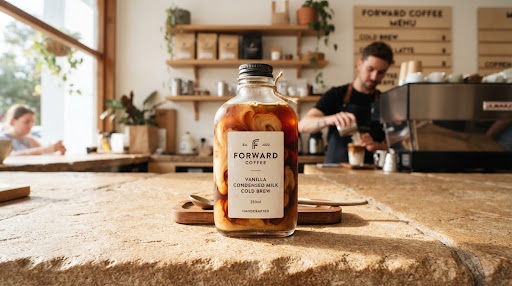
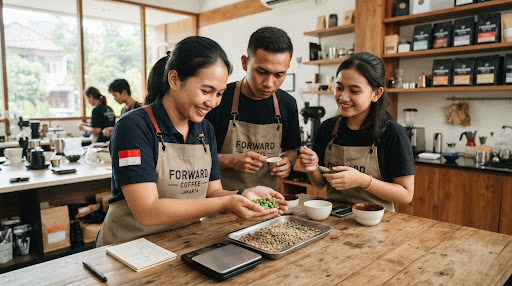
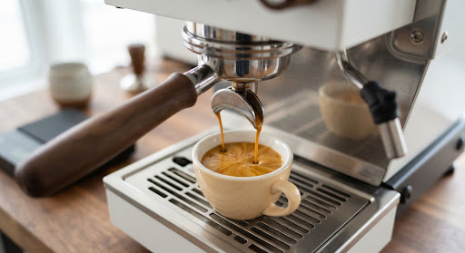
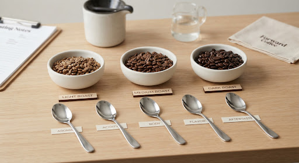

Botanical Origins & Growing Altitudes
At its botanical foundation, coffee is not a homogenous crop. More than 120 wild species inhabit the genus Coffea, yet two dominate commercial agriculture: Coffea Arabica and Coffea Canephora (colloquially termed Robusta). The distinction between them is primarily an ecological chronicle of altitude, temperature variance, and evolutionary survival.
Arabica is indigenous to the mist-shrouded montane forests of southwestern Ethiopia and the Boma Plateau of South Sudan. Thriving at elevations between 900 and 2,200 meters above sea level, Arabica cherishes temperate climes between 15°C and 24°C. The cooler highland nights dramatically decelerate cherry maturation, giving sugars and delicate aromatic esters the prolonged weeks required to fully concentrate in the seed.
Robusta, by contrast, originated in the lowland rainforests of equatorial western and central Africa (spanning modern Congo, Uganda, and Guinea). Adapted to thrive at altitudes of sea level up to 800 meters under temperatures fluctuating between 24°C and 30°C, the Robusta plant developed thick waxy leaves and an abundance of chemical defenses—most prominently caffeine, a natural pesticide that renders the tree largely resistant to coffee leaf rust (Hemileia vastatrix) and soil nematodes.
Agronomic & Chemical Matrix
Lab Analysis Standard| Parameter | Arabica (Typica / Bourbon lineages) | Robusta (Coffea Canephora) |
|---|---|---|
| Optimal Elevation | 900 – 2,200 MASL | 0 – 800 MASL |
| Caffeine Content | 1.2% – 1.5% (Gentle stimulant load) | 2.2% – 2.7% (~Twice the potency) |
| Sugar & Lipid Concentration | 60% more lipids; double sucrose | Lower sugar, higher organic ash |
| Dominant Tasting Notes | Jasmine, Stone Fruit, Bergamot, Panela | Dark Cacao, Smoked Hazelnut, Warm Molasses |
| Espresso Crema Profile | Silky, lighter hazelnut foam; fades quickly | Dense, thick golden-bronze foam; persistent |
| Chromosome Count | 44 chromosomes (Self-pollinating) | 22 chromosomes (Cross-pollinating) |
“Understanding the bean allows us to appreciate every subtlety in the cup. Coffee is agriculture, chemistry, and craftsmanship combined.”
Flavor Profiles in the Cup & Crafting Indonesian Blends
The stark chemical contrast between these two species dictates how each behaves under thermal expansion during roasting and ultimate aqueous extraction. Arabica’s elevated sugar concentrations undergo Maillard reactions and caramelization that yield delicate malt, caramel, and fruit ester compounds. When coupled with phosphoric and chlorogenic acids, Arabica produces that sparkling, wine-like clarity revered in specialty single-origin filter drips.
Robusta, conversely, yields minimal acidity and a notably higher volume of bitter chlorogenic acids (CGA). When handled without care, this manifests as harsh rubbery or woody notes. However, when specialty Canephora is cultivated meticulously—such as on the fertile volcanic hills of Lampung and South Sumatra—it yields profound notes of roasted cedar, bitter cocoa, and deep buttered praline.
Harmonizing the Modern Indonesian Palate
In Indonesian everyday coffee culture, Robusta is not an adversary to Arabica; it is an indispensable partner. By introducing 20% to 30% washed Fine Robusta alongside wet-hulled or fully washed Gayo Arabica, our roastery crafts a base that withstands condensed milk or dairy fat in authentic Es Kopi Susu while preserving aromatic crispness in slow-steeped cold bottles.

How to Taste the Difference in Your Daily Brew
Whether you are seated at our communal tasting bench or brewing in your kitchen with a French Press or V60, train your senses through this three-step comparative evaluation protocol:
Initial Fragrance & Dry Aroma
Sniff the freshly crushed grounds. Arabica greets the nose with delicate floral perfume, tea blossoms, and subtle stone fruit. Robusta projects toasted peanuts, dry grain, and dense tobacco-leaf warmth.
Acidity & Salivation
Aspirate a small spoonful. Notice the reaction along the bilateral sides of your tongue. Arabica triggers gentle salivation reminiscent of crisp green apples or red grapes; Robusta remains neutral and flat in acidity.
Mouthfeel & Lingering Viscosity
Press the liquid against your palate. Arabica feels akin to whole silk or black tea, dissolving cleanly. Robusta provides a heavy, syrupy coating with an enduring bittersweet cocoa and chicory aftertaste.

Forward Coffee Roastery Team
Dedicated to documenting the living traditions, botanical science, and daily coffee rituals across the Indonesian archipelago.
Further Inquiries & Editions

Issue #138 • 4 min readHow Espresso Extraction Works: Pressure, Water Channelization, and Time
Examining the physics of 9-bar hydraulic pressure pushing through tightly compressed pucks, preventing micro-channeling for balanced sweetness.

Issue #140 • 6 min readUnderstanding Roast Levels: Light, Medium, Dark
Tracing cellulose degradation, pyrolysis, and origin terroir expression from first crack through medium density development.